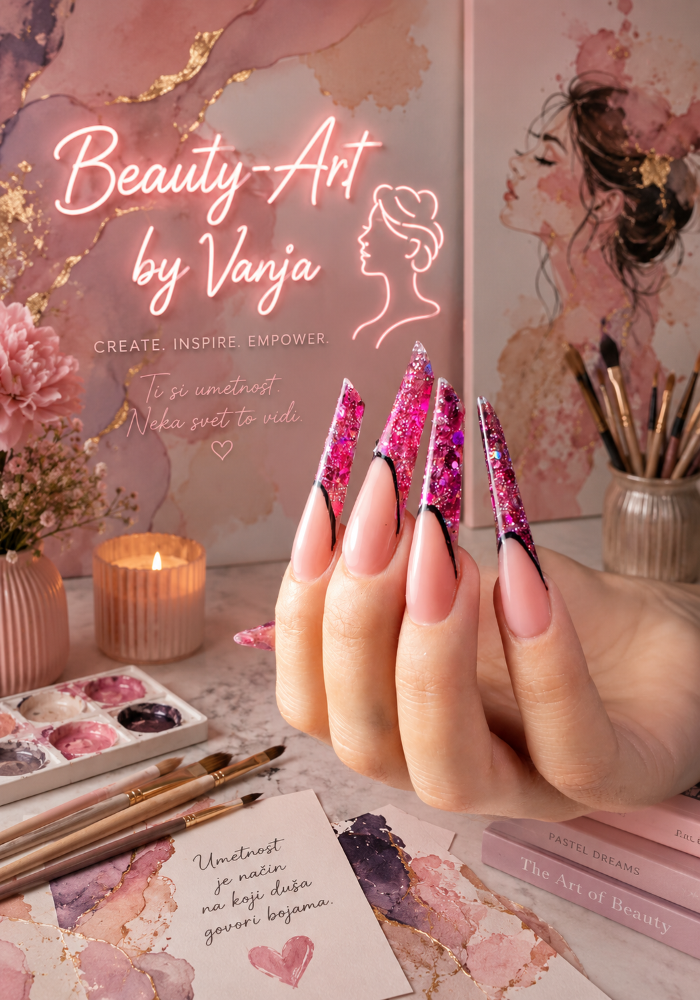

Dobrodošli u naš kutak lepote
Pružamo profesionalne usluge manikira i pedikira. Vaši nokti zaslužuju najbolju negu, kvalitetne materijale i maksimalnu posvećenost.
Stručnost i strast prema lepoti
U salonu Beauty-Art by Vanja verujemo da su negovane ruke i nokti ogledalo vašeg stila i zdravlja. Sa višegodišnjim iskustvom u svetu manikira i pedikira, naš cilj je da svakom klijentu pružimo individualni pristup i tretmane prilagođene njihovim potrebama. Pratimo najnovije svetske trendove i tehnike kako biosmo osigurali dugotrajnost i besprekoran izgled vaših noktiju.
Zašto izabrati nas?
- Vrhunski materijali
- Sterilni i sigurni instrumenti
- Prijatna i opuštena atmosfera
Naše vrhunske usluge
Bilo da vam je potrebna suptilna estetika za svakodnevne obaveze ili efektan izgled za specijalne prilike, nudimo rešenja koja traju nedeljama:
Ojačanje i estetski manikir
Koristimo isključivo premium baze i gelove koji štite vašu prirodnu nokatnu ploču, sprečavaju listanje i garantuju postojanost bez krzanja.
Aparatni pedikir
Stopala zaslužuju maksimalnu pažnju. Pored estetskog sređivanja, uspešno rešavamo probleme zadebljane kože i pružamo dubinsku hidrataciju.
Često postavljana pitanja
U zavisnosti od rasta vaših noktiju i svakodnevnih aktivnosti, optimalno vreme za korekciju je između 3 i 4 nedelje.
Vaša bezbednost je na prvom mestu. Svi metalni instrumenti prolaze kroz strogi proces hemijske dezinfekcije, a nakon toga i kroz sterilizaciju na visokim temperaturama.